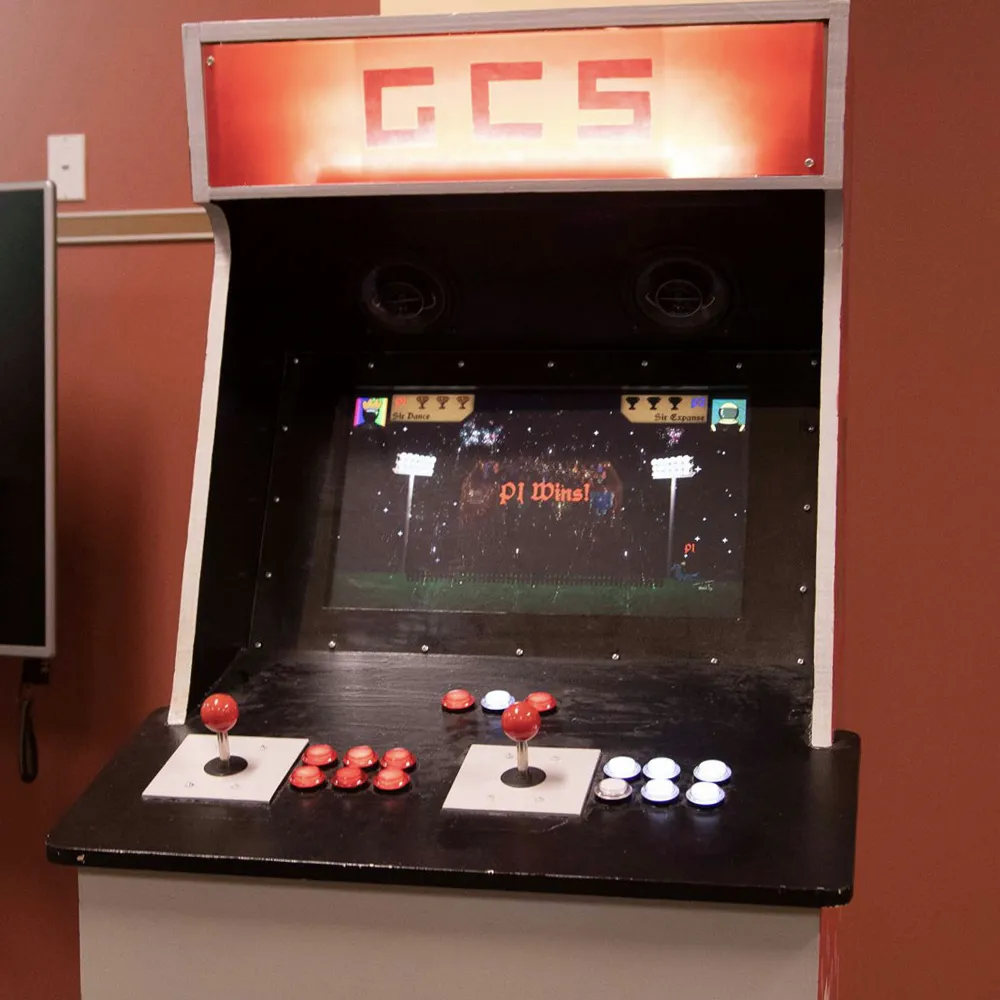
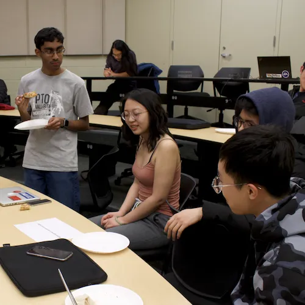
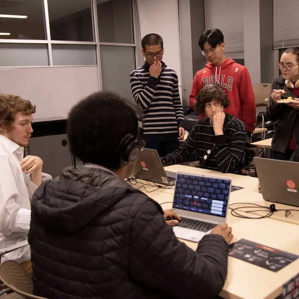

Want to make games?
We are a student game development club at Carnegie Mellon University.

Game Creation Society
is a student-run organization at Carnegie Mellon University, dedicated to the art and science of making games. GCS provides an environment for people of various disciplines to work together on projects as they would in a real development environment.The GCS Experience

Interdisciplinary Collabs
Gamemaking Tutorials
Professional Talks

Gaming Events